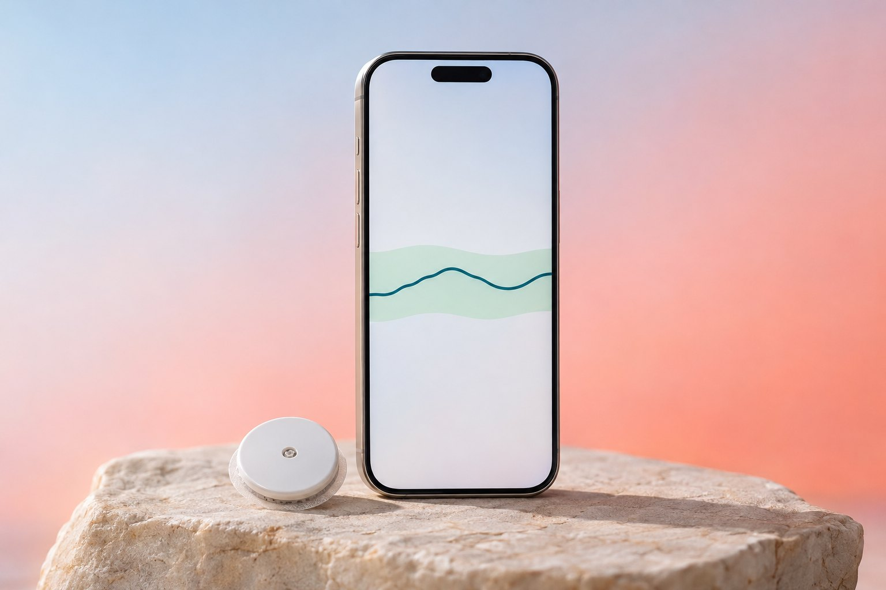

KI in der Diabetologie
Sensordaten, Entscheidungsunterstützung und Patientenkommunikation in Klinik und Schwerpunktpraxis.
Seit 2023 spreche ich regelmäßig vor Diabetologinnen und Diabetologen, in Qualitätszirkeln, auf Fortbildungen und Kongressen. Im Mittelpunkt steht die Frage, wie KI mit den Datenmengen aus Sensoren, Pumpen und Apps umgehen kann und wo sie Praxis und Klinik wirklich entlastet.
Vorträge
Eine Auswahl. Fortbildungen auf Wunsch CME-zertifiziert.
2026
- Nov.Praxissoftware im UmbruchDDG Herbsttagung, Dresden
- Sept.Boehringer Ingelheim, Denkfabrik Diabetes, Herz und NiereFrankfurt am Main
2025
- Nov.KI in der DiabetologieDDG, 106. Kurs Klinische Diabetologie
- Apr.KI in der Diabetologie – Heute und MorgenNovo Nordisk, Spezialistentreffen Diabetologie, Radebeul
- Jan.Zukunft ist jetzt – KI-gestützte Diagnostik und TherapieLilly, DMP-Tagung, Bonn
2024
- Nov.Die Zukunft der DiabetesversorgungdiabetesDE, Meilensteine der modernen Diabetologie, Berlin
- Nov.KI – Eine Revolution in der Medizin?DDG-Präsenz, Berlin
- Sept.Die Zukunft der Diabetologie – KI im Dienste des PatientenNovo Nordisk, Zukunftsforum Diabetes, Mainz
- MärzLarge Language Modelle in der medizinischen AnwendungLilly, Face-to-Face, Frankfurt am Main